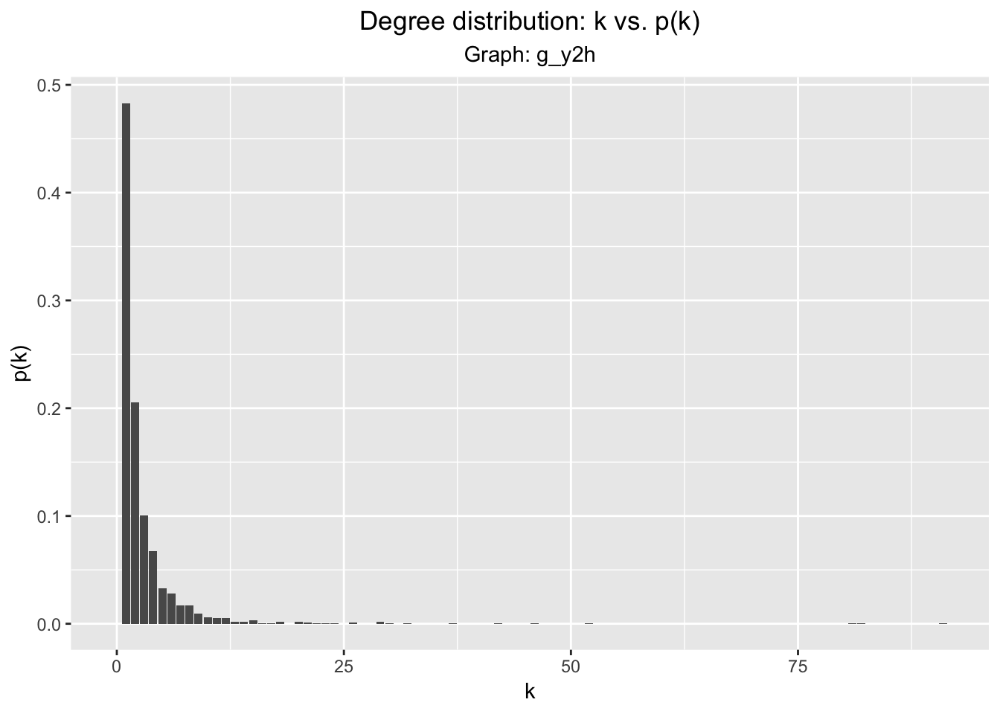

knitr::opts_chunk$set(echo = TRUE, cache = TRUE, message = FALSE)
library(igraph, warn.conflicts = FALSE)
library(ggplot2, warn.conflicts = FALSE)
library(NetRep, warn.conflicts = FALSE)
library(tidyverse, warn.conflicts = FALSE)
library(openxlsx, warn.conflicts = FALSE)Reading in both graphs, merging two graphs via igraph::union:
g_y2h <- graph_from_data_frame(read.xlsx("./data/hw3/Y2H_uniondata.xlsx"), directed = FALSE)
g_ccsb <- graph_from_data_frame(read.xlsx("./data/hw3/CCSB_YI1.xlsx"), directed = FALSE)
g_union <- g_ccsb %u% g_y2hDefining a function to visualize a graph’s degree distribution:
plot_dd <- function(g){
g.dd <- data.frame(0:(length(degree_distribution(g)) - 1),
degree_distribution(g, cumulative = FALSE))
colnames(g.dd) <-c("k", "p_k")
ggplot(g.dd, aes(x = k, y = p_k)) + geom_bar(stat = "identity") +
labs(x = "k", y = "p(k)", title = "Degree distribution: k vs. p(k)",
subtitle = paste("Graph:", deparse(substitute(g)))) +
theme(plot.title = element_text(hjust = 0.5), plot.subtitle = element_text(hjust = 0.5))
}plot_dd(g_union)
Some graph metrics
| Metric | g_y2h |
g_ccsb |
g_union |
|---|---|---|---|
| Radius | \(3.48\) | \(1.76\) | \(5.93\) |
| Diameter | \(11\) | \(5\) | \(16\) |
| Average path lenght | \(3.48\) | \(1.76\) | \(5.93\) |
| Average clustering coefficient | \(0.10\) | \(0.11\) | \(0.10\) |
| Global clustering coefficient | \(0.024\) | \(0.021\) | \(0.024\) |
Determining if the graph follows a power law distribution:
g_union.pl_fit <- fit_power_law(degree(g_union))
g_union.pl_fit## $continuous
## [1] FALSE
##
## $alpha
## [1] 2.893596
##
## $xmin
## [1] 7
##
## $logLik
## [1] -462.446
##
## $KS.stat
## [1] 0.02677559
##
## $KS.p
## [1] 0.9997574graph_hot_otus <- function(graph_object){
communities_object <- cluster_edge_betweenness(graph_object, weights = E(graph_object)$rho)
hot_otus <- vector
for (community in communities(communities_object)){
sub_graph <- induced.subgraph(graph = graph_object,
v = community, impl = "auto")
highest_degree_otu <- V(sub_graph)[which.max(degree(sub_graph))]$name
hot_otus <- c(hot_otus, highest_degree_otu)
# print(paste("Highest degree OTU was", highest_degree_otu, "(degree =",
# degree(sub_graph, highest_degree_otu), "):"))
}
plot(communities_object, graph_object,
layout = layout.fruchterman.reingold(graph_object),
rescaled = TRUE,
vertex.size = ifelse(V(graph_object) %in% hot_otus, 5, 1),
vertex.label = ifelse(V(graph_object) %in% hot_otus, V(graph_object)$id, NA),
vertex.label.cex = 2
)
return(paste("modularity of graph = ", modularity(graph_object, membership(communities_object)), sep=""))
}# graph_hot_otus(g_union.largest_connected)Deleting nodes at random:
remove.num <- floor(gorder(g_union) / 10)
random_remove <- as.numeric(sample(gorder(g_union), size = remove.num))
g_union.subsampled <- delete.vertices(g_union, random_remove)Reading in BioGrid2018 network, visualizing degree distribution:
t_bg2018 <- read.table("./data/hw3/BioGrid2018_uni-2", header = TRUE, row.names = 1)
g_bg2018 <- graph_from_data_frame(t_bg2018[, 1:2], directed = FALSE)
g_bg2018.clusters <- clusters(g_bg2018)
g_bg2018.clusters$csize## [1] 5960Assuming that we are meant to do this on g_union. Getting largest connected component of g_union.
g_union.clusters <- clusters(g_union)
g_union.clusters$no## [1] 185We see there are \(185\) clusters. There is one large cluster, which has \(1647\) nodes:
head(sort(g_union.clusters$csize, decreasing = TRUE))## [1] 1647 6 5 4 4 4Getting the connected component:
g_union.largest_connected <- decompose.graph(g_union)[[1]]
plot_dd(g_union.largest_connected)Randomly remove edges. We’ll first remove 10% of edges randomly:
remove.num <- floor(gorder(g_union.largest_connected) / 10)
random_remove <- as.numeric(sample(gorder(g_union.largest_connected), size = remove.num))
g_union.largest_connected.subsampled <- delete.vertices(g_union.largest_connected, random_remove)